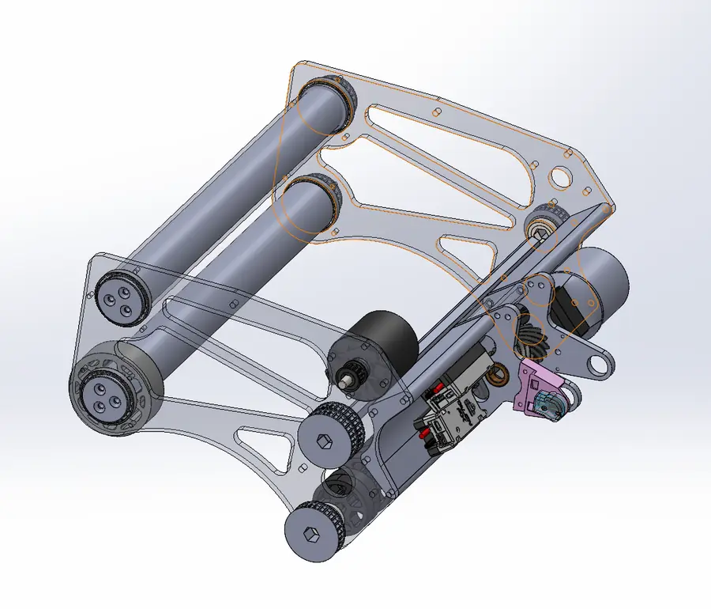
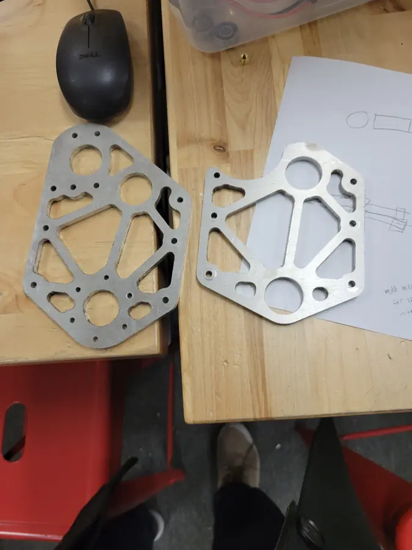
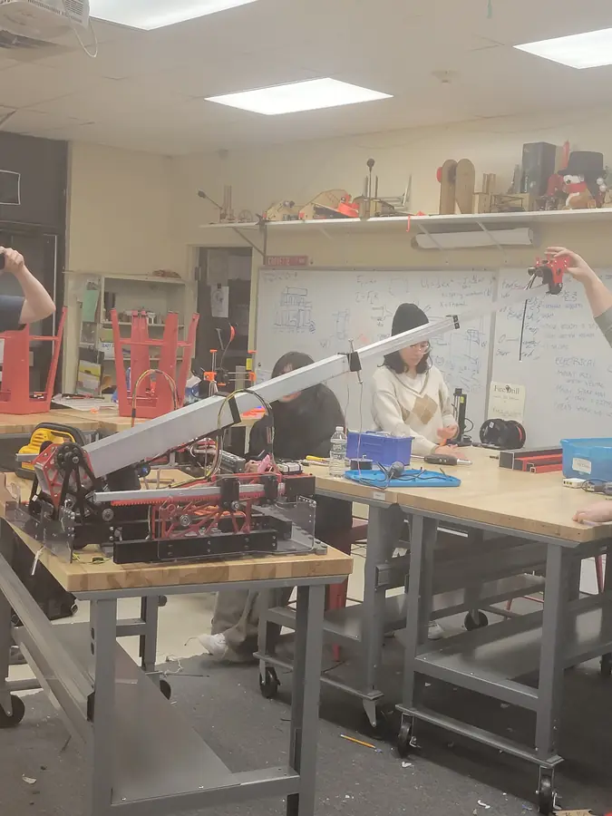
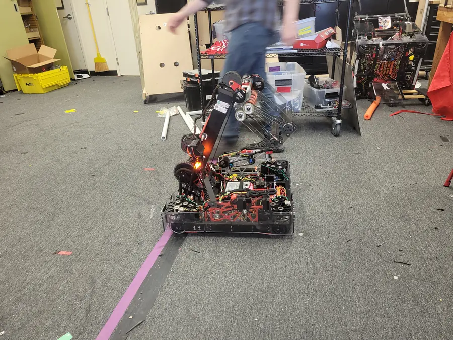
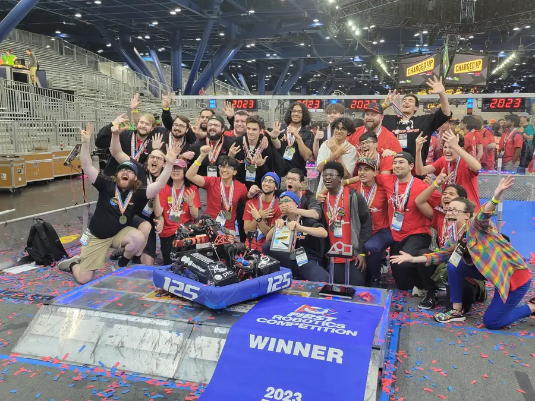
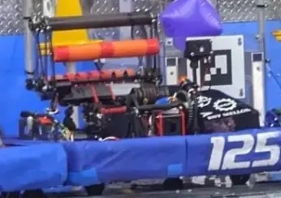

The game
In Charged Up (2023), robots scored two very different game pieces onto multi-level grids. Cones are rigid, yellow, nearly 13 in tall and well over a pound. Cubes are soft and inflatable, about 9½ in across and only a few ounces. A robot that could handle both quickly had a big advantage.
End effector
My end effector handles both pieces with three rollers. Two rollers at the front pinch a cone between them. A third roller at the back, working with one of the front rollers, captures a cube. That gave the robot one compact mechanism for both shapes instead of two separate intakes.

Elevator gearbox
The robot's arm used a cascading linear slide, a telescoping elevator rigged so that every stage extends together. I designed the gearbox that drives it.



Results
Duality won the Greater Boston District Event and then the Daly Division at the 2023 FIRST Championship in Houston, alongside alliance partners 5460, 870 and 2590. The alliance went on to the Einstein finals and finished as World Finalist.

